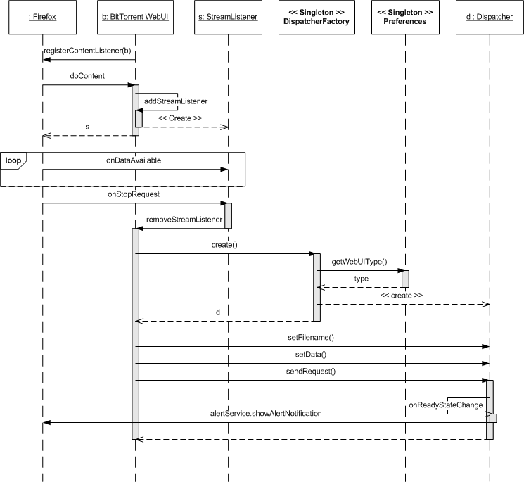
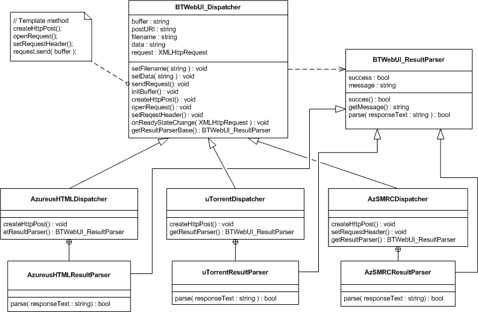

BitTorrent WebUI Firefox Extension
Supported Clients:
-
Azureus is supported through the following Remote Control plugins
- HTML WebUI
- AzSMRC (thanks to Damokles for all his help)
- Swing WebUI
- uTorrent
- Transmission v1.51 +
- Deluge v1.1.9 +
Why?
Since I use the HTML WebUI plugin to control Azureus (which I run headless on a Linux server) I got tired of always having to copy paste .torrent links to the upload form of Az's WebUI. So I made a Firefox extension which automatically downloads .torrent files and then uploads them to my Azureus WebUI. The result is pretty seamless, click on the download link of a bittorrent file and you receive a nice little message telling you if it worked or not.Here's how it works.
The extension registers itself as a content listener with Firefox, when a new channel is opened we are given the content-type of the channel, if the content-type is that of a .torrent file (application/x-bittorrent) then BitTorrent WebUI supplies an instance of StreamListener, effectively taking over the data transfer. Once the transfer is completed, the StreamListener calls back the extension passing it the channel data (the contents of the .torrent file).
The extension then requests a dispatcher from the dispatcher factory, the dispatcher factory returns a concrete dispatcher based on the BitTorrent client selected in the extension preferences. The dispatcher then creates a post request specifically for the selected web interface, and sends it to the URL of the web interface. The result of the POST request is then parsed and displayed using Firefox's alert service.
Early on I realised that I would get requests to support different BitTorrent clients and remote control plugins so I decided to design the extension so that it could easily accommodate these changes.
Here is an overview of the Dispatcher object hierarchy. (I'm using "object" here because classes don't really make sense in the context of JavaScript)
Each BitTorrent client / WebUI has its own dispatcher based on the prototype dispatcher object (kind of like a base class). Dispatchers use the Template Method Pattern to customize the process of creating a POST request containing the torrent file data.
Concrete Dispatcher objects can "hook" into 4 steps of creating and sending the torrent data
- createHTTPPost - where POST data is put into a buffer
- openRequest - most dispatchers don't overload this, it's where we set the server URL for the request
- setRequestHeader - this is where dispatchers can add HTTP headers to the request like "Content-Type: application/json"
- getResultParser - all dispatchers must overload this function and provide an object which can determine if the POST worked or not based on the server response
That way I can add support for a new client by writing one new file which defines a new dispatcher object and registers it with the dispatcher factory, no other modifications are necessary.